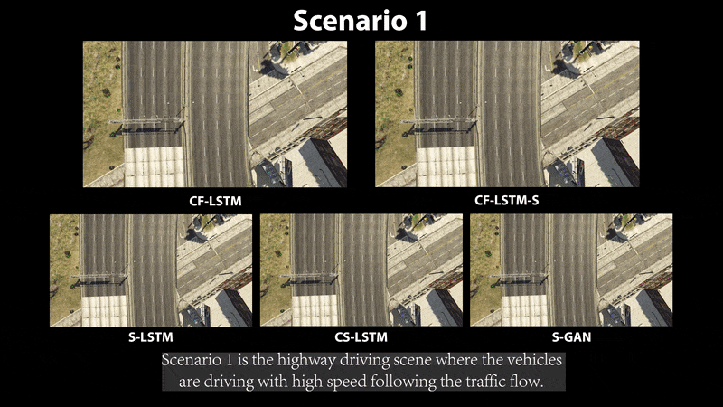
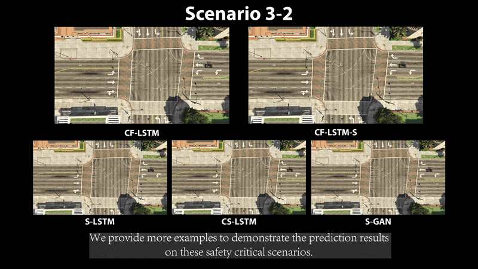
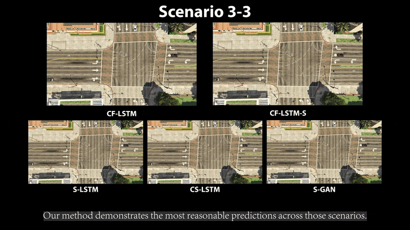

Predicting agents’ future trajectories plays a cru- cial role in modern AI systems, yet it is challenging due to in- tricate interactions exhibited in multi-agent systems, especially when it comes to collision avoidance. To address this challenge, we propose to learn congestion patterns as contextual cues explicitly and devise a novel “Sense–Learn–Reason–Predict” framework by exploiting advantages of three different doctrines of thought, which yields the following desirable benefits: (i) Representing congestion as contextual cues via latent factors subsumes the concept of social force commonly used in physics- based approaches and implicitly encodes the distance as a cost, similar to the way a planning-based method models the environment. (ii) By decomposing the learning phases into two stages, a “student” can learn contextual cues from a “teacher” while generating collision-free trajectories. To make the framework computationally tractable, we formulate it as an optimization problem and derive an upper bound by leveraging the variational parametrization. In experiments, we demon- strate that the proposed model is able to generate collision- free trajectory predictions in a synthetic dataset designed for collision avoidance evaluation and remains competitive on the commonly used NGSIM US-101 highway dataset.




